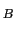
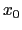
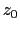

Next: wait
Up: Tcl Text Commands
Previous: vmdinfo
Contents
Index
Subsections
volmap
The volmap command creates volumetric maps (3D grids containing a value at
each grid point) based on the molecular data, which can then be visualized in
VMD using the Isosurface and VolumeSlice representations or using the Volume
coloring mode. Also note that the VolMap plugin, accessible from the VMD
Extension menu, provides a graphical front-end to many of the volmap
command's capabilities.
To create a volumetric map, the volmap command is run in the following
way, where the atom selection specifies the atoms and molecule to include in the
calculation, and where the maptype specifies the type of volumetric data to
create:
volmap <maptype> <atom selection> [optional arguments]
For example, to create a mass density map with a cell side of 0.5 Å,
averaged over all frames of the top molecule, and add the volumetric data to the
top molecule, on would use:
volmap density [atomselect top "all"] -res 0.5 -weight mass -allframes \
-combine avg -mol top
The various volumetric data map types currently supported by volmap are
listed as follows. Please note that when a map type description refers to an atoms radius
or beta field, etc., that these values will be read directly from VMD's
associated fields for that atom. In certain cases, you may want to adjust the
atom selections fields (such as radius, beta, etc.) before performing the
volmap analysis.
- density: creates a map of the weighted atomic density at each
gridpoint. This is done by replacing each atom in the selection with a
normalized gaussian distribution of width (standard deviation) equal to its
atomic radius. The gaussian distribution for each atom is then weighted using
an optional weight (see the -weight argument), and defaults to a weight
of one (i.e, the number density). The various gaussians are then
additively distributed on a grid.
- interp: creates a map with the atomic weights interpolated
onto a grid. For each atom, its weight is distributed to the 8 nearest
voxels via a trilinear interpolation. The optional weight (see the
-weight argument) defaults to a weight of one.
- distance: creates a map for which each gridpoint contains the
distance between that point and the edge of the nearest atom. In other words,
each gridpoint specifies the maximum radius of a sphere cnetered at that point
which does not intersect with the spheres of any other atoms. All atoms are
treated as spheres using the atoms' VMD radii.
- coulomb, coulombmsm: Creates a map of the electrostatic
field of the atom selection, made by computing the
non-bonded Coulomb potential from each atom in the selection
(in units of
). The coulomb map generation is optimized to
take advantage of multi-core CPUs and programmable GPUs if they are
available [13,14,15,16,17,18,19,20,21].
- ils: Creates a free energy map of the distribution of
a weakly-interacting monoatomic or diatomic gas ligand throughout the
system using the Implicit Ligand Sampling (ILS) technique.
See additional information about ILS below.
- mask: Creates a map which is set to 0 or 1 depending on whether
they are within a specified cutoff distance (use the -cutoff argument)
of any atoms in the selection. The mask map is typically used in combination
with other maps in order to hide/mask data that is far from a region of
interest.
- occupancy: Each grid point is set to either 0 or 1, depending on
whether it contains onbe or more atoms or not. When averaged over many frames,
this will provide the fractional occupancy of that grid point. By default,
atoms are treated as spheres using the atomic radii and a gridpoint is
considered to be "occupied" if it lies inside that sphere. Use the -points argument to treat atoms as points (a grid point is "occupied" if its
grid cube contains an atom's center).
The following optional arguments are universally understood by every volmap map types:
- -allframes: Use every frame in the molecule instead of just the
current one to compute the volumetric map. The method used to combine the
various trajectory frame maps can be specified using the -combine
argument. By default, volmap only uses the current frame.
- -combine < avg | max | min | stdev | pmf >: Specifies the rule to use to combine frames when using the
-allframes argument. These correspond to keeping the average, maximum or
minimum values from the range of calculated frames. stdev will return
the standard deviation for each point over the range of frames, and pmf
uses a thermal average
for each point. The
default is avg except for ligand maps where the default is pmf.
- -res resolution: Sets the resolution of the map. This means
that the volume will be subdivided into many small cubes whose side have a
length of resolution.
- -minmax {{
} {
}}: Allows the user to specify the min-max
boundaries of the grid in which the volumetric map will be computed. The
argument to -minmax is a list of two 3-vectors specifying the minimum and
maximum coordinates of the desired volumetric data grid.
- -checkpoint frequency: For the analysis of
long trajectories, it can be desirable to have intermediate outputs of the
volmap computation. The checkpoint option forces the volmap computation to
output a map of what has been computed so far, at every frequency
frames. The default frequency is 500; setting the frequency to
zero disables the checkpointing feature.
- -mol < molid | top >: Exports the final
volumetric data into the VMD molecule specified by molid. By default,
all maps are exported to a file or name maptype_out.dx; using the -mol option overrides this.
- -o filename: Exports the final volumetric data into a DX
file (.dx extension is added if missing). By default, all maps are exported to
a file or name maptype_out.dx.
The following optional arguments are special arguments understood only by some volmap map types. Some arguments may only apply to certain map types or may have different meaning for different map types:
- -cutoff cutoff: Specifies a cutoff distance. For the
distance maps, specifies the largest distance that will be considered (large
number is better but slower). For the mask maps, specifies the distance from
each atom which will be considered part of the mask.
- -points: For the occupancy map type. Treat atoms as point
particles instead of as spheres.
- -radscale factor: For the density map type. Sets a
multiplication factor that multiplies all the VMD atomic radii for the purpose
of the calculation.
- -weight < field name | value list >:
For the density map type. Sets a per-atom weight to be used when computing the
density. This can be the name of any VMD numerical atomic field (such as mass,
charge, beta, occupancy, user, radius, etc.) or else a Tcl list of
numbers of the same length as the number of atoms.
This command computes a map of the estimated potential of mean force (in
units of k
T at 300 K) of placing a weakly-interacting gas monoatomic or
multiatomic ligand at every gridpoint. These results will only be valid when
averaging over a large set of frames.
Note that if you have a CUDA enabled GPU then your ILS calculation
will run about 20 times faster than on a CPU.
Please refer to and cite:
Cohen, J., A. Arkhipov, R. Braun and K. Schulten, "Imaging
the migration pathways for O , CO, NO, and Xe inside myoglobin",
Biophysical Journal 91, 1844-1857, 2006.
, CO, NO, and Xe inside myoglobin",
Biophysical Journal 91, 1844-1857, 2006.
The command syntax differs from the other volmap commands and
it has its own set of options:
volmap ils molid < minmax | pbcbox > [options]
Here minmax denotes the boundaries of the grid in
which the volumetric map will be computed. It is given as
a list of two 3-vectors specifying the minimum and maximum
coordinates of the desired volumetric data grid
{{
}
{
}}.
If you provide the keyword pbcbox instead of the minmax
coordinates then the target grid will be set to the rectangular
box that encloses the PBC cell. A typical choice for the minmax
parameters would be the minmax box of a subset of your system
(for instance the just protein) as returned by the measure
minmax command.
Based on the grid dimensions a selection that includes all atoms within
the interaction cutoff distance (specified by -cutoff) is
automatically chosen for the computation of the interactions.
In case your minmax box exceeds the periodic bounday box the
non-overlapping parts of your map will be ill defined and a warning
is printed. In this case you should consider wrapping the coordinates
so that the requested grid lies in the center of the box. You can use
the pbc wrap command from the PBCtool plugin for this.
In case the nonbonded interaction margin exceeds the periodic
boundaries regions of your map will be based on incomplete
interactions and a warning is printed. If this happens you should
use the -pbc flag which automatically takes atoms of the
neighboring cells into account.
Before starting the computation, the atomic radii of each atom in the
molecule should be set to the corresponding CHARMM Lennard-Jones
parameter (in Ångström), and the beta
value of each atom should be set to the CHARMM Lennard-Jones
(energy well depth in kcal/mol) parameter.
This can be done using VMD's VolMap plugin. Simply call in succession
the following commands within the VMD console environment to use default
CHARMM values for the various atoms of a molecule:
package require ilstools
ILStools::readcharmmparams [list of CHARMM parameter files]
ILStools::assigncharmmparams <molid>
The following optional arguments are understood:
- -first frame: First frame to process. (default: frame 0)
- -last frame: Last frame to process.
(default: last frame of molecule)
- -o filename: Exports the final volumetric data into a DX
file (.dx extension is added if missing). By default, all maps are exported to
a file or name maptype_out.dx.
- -res resolution: Sets the resolution of the final map.
This means that the volume will be subdivided into many small cubes
whose side have a length of resolution. The computation should
be performed on a finer grid (see -subres option) but at the end
the map is downsampled to this resolution.
A good choice for the grid resolution 1 Å (argument -res).
Lower resolutions make it difficult to see features, higher ones will
be very costly in terms of computation time. Also, since the fluctuation
of the protein backbone is on the order of 1-2 Angstrom a higher grid
resolution doesn't make much sense.
- -subres num: Number of points in each dimension of the
subsampling grid, e.g. 2 for a 2x2x2 subgrid or 3 for a 3x3x3 subgrid.
A value of 1 means is no subsampling, the default is (-subres 3).
Without subsampling the probe is placed at each grid cell
center (for diatomic probes in
different random orientations,
see argument -orient). This position is assumed to be representative
for the interaction of the probe in this voxel with the system.
However, for a typical voxel size of 1x1x1 Å the energy value can
differ significantly within the voxel and the value at the center might
not be close to the average. Subsampling averages over the interaction
on a regular subgrid in each voxel thus producing a more accurate free
energy value for placing the probe into each voxel. Even though this
severely increases the computational cost it is highly recommended that
you use subsampling!
A 3x3x3 subgrid for a 1 Å resolution map is a good choice.
- -T temperature: The temperature in Kelvin at which the
MD simulation was performed. (default: 300)
- -probesel selection: Atom selection that defines the
probe molecule. The radius and occupancy fields should be populated
with the VDW radii and VDW epsilon parameters from the force field
(see option -probevdw).
Alternatively, you can specify the probe coordinates and VDW parameters
probe atoms directly using the -probecoor and -probevdw
options.
- -probecoor atomcoords: Set the coordinates of the
probe atoms in form of a list of triples
{{

}
 {
{ }}.
}}.
- -probevdw parameterlist: Set the tuple of van der
Waals parameters for each probe atom in the form
{{
}
{
}}.
They define the nonbonded interactions of the probe evaluated by the
Lennard-Jones potential
where
and
.
(That's the same form as in CHARMM and AMBER parameter files).
Units of
are kcal/mol, and of
are
Ångström.
- -orient n: Control the number of samples of
different probe orientations for multiatom probes at each grid
point. The number
 determines the angular spacing of probe
orientation vectors and of the rotations around each of these
vectors.
determines the angular spacing of probe
orientation vectors and of the rotations around each of these
vectors.
: use 1 orientation only
: use 6 orientations (vertices of a octahedron)
: use 8 orientations (vertices of a hexahedron)
: use 12 orientations (faces of a dodecahedron)
: use 20 orientations (vertices of a dodecahedron)
: use 32 orientations (faces+vertices of a dodecahedron)
: geodesic subdivisions of icosahedral faces
with frequency 1, 2, ...
For each orientation a number of rotamers will be
generated. The angular spacing of the rotations
around the orientation vectors is chosen to be about
the same as the angular spacing of the orientation
vector itself.
If the probe has at least one symmetry axis then the
rotations around the orientation vectors are reduced
accordingly. If there is an infinite oder axis (linear
molecule) the rotation will be omitted.
In case there is an additional perpendicular C2 axis
the half of the orientations will be ignored so that
there are no antiparallel pairs.
Probes with tetrahedral symmetry:
Here
denotes the number of rotamers for each of
the 8 orientations defined by the vertices of the
tetrahedron and its dual tetrahedron.
- -cutoff cutoff: Set the CHARMM van der Waals cutoff beyond
which the interaction between the probe and protein atoms is set to zero.
- -maxenergy energy: Cutoff energy above which the
occupancy of a grid cell is regarded zero. For GPUs energies of
more than 87 always correspond to floating point values of zero
for the occupancy. Hence there is no point going higher than
that. For CPUs that number is higher, however, the lower the
occupancy the more severely these points will be undersampled and
the according error will be very high. Thus, in the final map it
probably does not make sense to look at values higher than 10kT
which not a big loss since the low energy regions are the ones we
are interested in. So you probably want to set this to a value
between 10 and 87 (we are in thye process of testing this but I
suppose 20 kT would be a safe number).
- -alignsel selection:
Use the provided selection to align all trajectory frames to the first
frame. If you don't use this option you should make sure that you aligned
all frames yourself before running volmap ils.
- -transform matrix:
Suppose you want to align your trajectory to a reference frame
from a different molecule. In this case you should align the
first frame of your trajectory to the reference and provide the
according alignment matrix as returned by "measure fit")
using the -transform option. volmap ils will take care
of the rest.
- -pbc:
This flag signals that you want a periodic boundary aware ILS
calculation. Depending on the desired target grid size image atoms
from neighboring PBC cells are taken into account for the computation.
The atoms used for the calculation are chosen from a box that exceeds
the target grid size by the interaction cutoff in each direction.
Note: If your molecule rotated or drifted from the PBC center during
your MD simulation then the structure alignment will rotate or shift
the PBC cell so that your map might not lie entirely inside the PBC
cell anymore. This will lead to ill-defined fringes of the map and you
might want to consider rewrapping the coordinates. Rewrapping cannot
undo the rotation but unless you have a very oblonged PBC cell
removing the shift by rewrapping will in most cases yield a map
without or with little boundary effects. See the pbc wrap
command from the PBCtool plugin.
Warning: If you use -pbc DO NOT ALIGN the frames of
the structure yourself prior to the calculation! It will totally
mess up the definition of your PBC cells. Instead you should use
the -alignsel option and let volmap handle the alignment.
However, you CAN align the sturcture globally (i.e. align all
frames using the SAME transformation matrix) to a reference
frame. In this case you have to provide the transformation matrix
you used via -transform.
- -pbccenter vector:
Since the PBC cell origin is stored neither in DCD files nor in VMD
you have to specify it in case it is different than the default
{0 0 0}.
- -maskonly: This flag requests to compute only a mask map
telling for which gridpoints we expect valid energies, i.e. the
points for which the maps overlap for all frames will contain 1,
all other points will be 0. This is useful if you don't use
periodic boundary conditions where it can happen that due to the
choice of the grid and/or the rotation of the protein the box
including your grid plus the interaction cutoff will lie partially
outside your system which means you would miss some of the
interactions. The map produced by the -maskonly mode will
tell where are these ill defined regions.
Next: wait
Up: Tcl Text Commands
Previous: vmdinfo
Contents
Index
vmd@ks.uiuc.edu